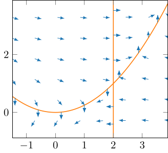
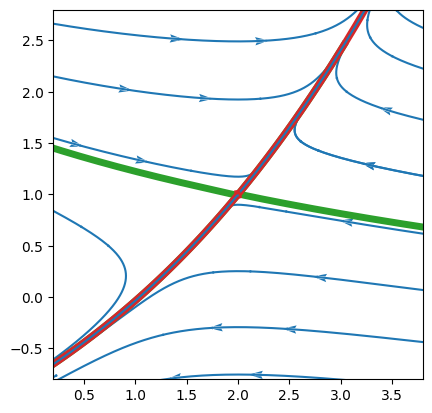
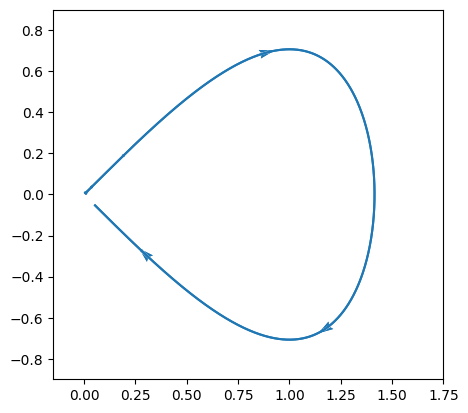
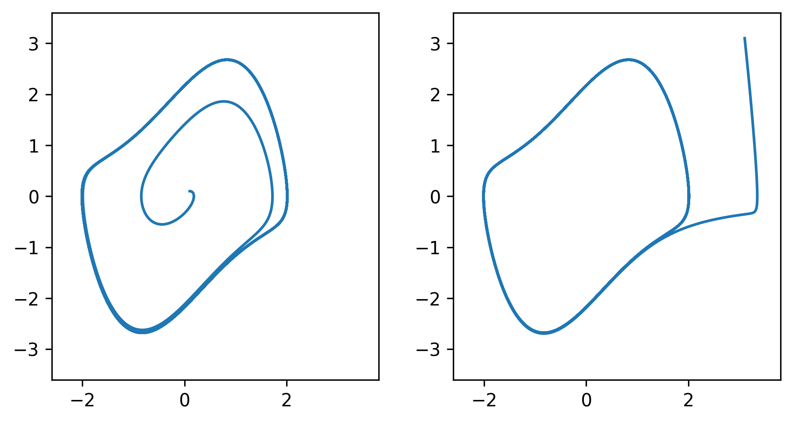
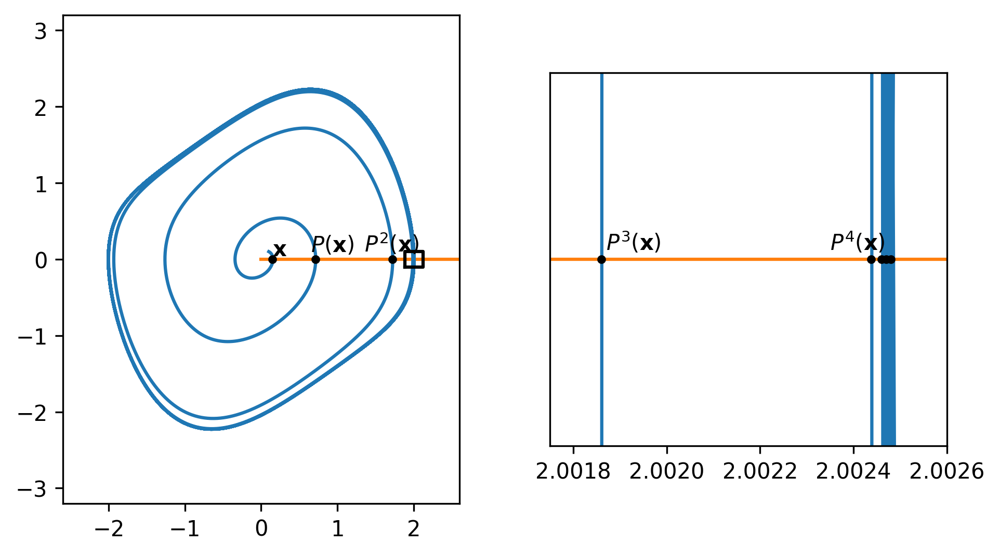
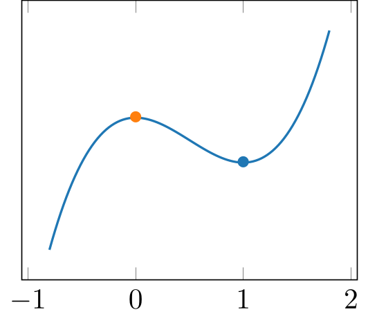
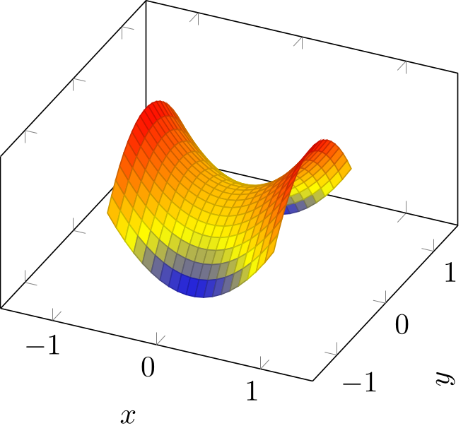
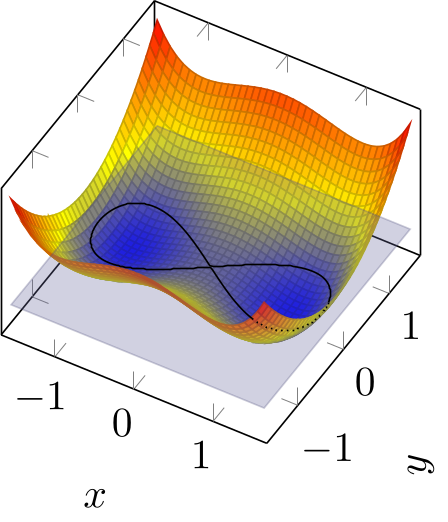
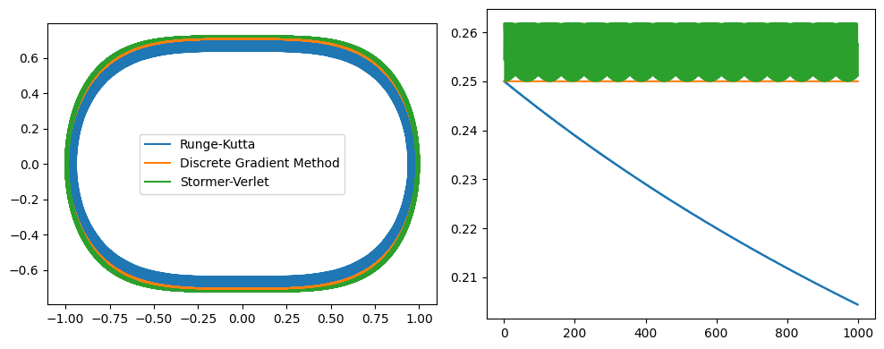

3. 解軌道の幾何学的構造
自励系の解 $\mathbf{x}(t)$ を相空間上の軌道として表す場合, 平衡点が漸近安定である場合は平衡点付近の点を初期値とする軌道は平衡点に向けて収束していく. それでは漸近安定でない平衡点付近の点を初期値とした場合, 自励系の解はどのような軌道を描くだろうか. 平衡点が不安定ならば, 線形力学系の場合には (平衡点が源点であっても鞍点であっても) 無限遠に発散するような軌道しか現れない. 一方で, 非線形力学系では, 不安定な平衡点付近の点を初期値とする軌道が必ずしも発散するとは限らない, 例えば (自分自身を含む) 平衡点に近づいたり, リミットサイクル に収束することが起こり得る.
一般に, 非線形力学系の解には, 線形力学系では現れない挙動が見られる. 非線形力学系の興味深い挙動を明らかにするために, 平衡点付近以外での挙動も含め, 解の全体の構造を調べたい. そのような議論は一般には複雑なものになるが, 特に自励系が低次元の場合には (例えば $2$ 次元の場合, つまり 相平面 上では) 解の大域的な挙動を幾何学的に説明することができる. これまでも力学系の具体例としては $2$ 次元のものを主に考え, 主に線形力学系に対し相図や軌道の図示により解の挙動を説明してきたが, ここではそうしたアイデアをさらに発展させ, 相平面解析 に代表される非線形自励系の大域的な解軌道を説明するための幾何学的解釈を紹介する.
3.1: 非線形力学系の解の挙動
まず, ここまでに紹介した様々な概念に追加で, 非線形力学系の解軌道の性質を説明するためのアイデアを導入しよう. 最初に紹介する ヌルクライン (nullcline) は, 特に非線形力学系に対して, 相平面上でのおおよその解の挙動を把握する際に有用である:
自励系 $\mathbf{x}' = \mathbf{f}(\mathbf{x})$, つまり \[ \begin{pmatrix} x_1' \cr x_2' \cr \vdots \cr x_d' \end{pmatrix} = \begin{pmatrix} f_1(\mathbf{x}) \cr f_2(\mathbf{x}) \cr \vdots \cr f_d(\mathbf{x}) \end{pmatrix} \] を考える. このとき, $i=1, 2, \dots d$ に対して \[ \{\mathbf{x}\in\mathbb{R}^d : f_i(\mathbf{x}) = 0\} \] を $x_i$ のヌルクライン (nullcline) という.
- $x_i$ のヌルクライン上の点では, $x_i' = 0$ が成立する, つまり時間経過により $x_i$ 方向には動かない.
- ベクトル場 $\mathbf{f}$ が連続ならば, ヌルクラインでのみ流れの "向き" が切り替わる可能性がある. つまり, 方向場の矢印の "向き" ($2$ 次元の力学系なら右上, 右下, 左上, 左下) はヌルクラインで区切られた領域内で共通である.
- すべてのヌルクラインの交点では, 時間経過によりどの方向にも動かない, つまりすべてのヌルクラインの交点は平衡点である.
- あとはヌルクラインで区切られた各領域上でのおおよその方向場から, 相図の概形を描いたり平衡点の安定性の判定が (大雑把に) できる.
- ヌルクラインは一般に $d$ 次元力学系に対して定義されるが, これに基づく解軌道の解釈を $3$ 次元以上の力学系に応用することは, あまり実用的では無いだろう (少なくともコンピュータの利用は必須だろう).
非線形力学系 \[ \begin{pmatrix} x' \cr y' \end{pmatrix} = \begin{pmatrix} 4y-x^2 \cr x-2 \end{pmatrix} \] を考える. いま, $x$ のヌルクライン $4y-x^2=0$ 上では $x'=0$ であるため, 方向場をプロットした際の矢印は $4y-x^2=0$ 上では真上か真下を向いている. より具体的には, $4y-x^2=0$ かつ $y' = x-2\lt0$ ならば真下を, $4y-x^2=0$ かつ $y' = x-2\gt0$ ならば真上を向いていることがわかる.
同様に, 方向場の矢印は $y$ のヌルクライン $x-2=0$ 上では水平方向を向いている. さらに $x' = 4y-x^2$ の符号を調べることにより右か左かがわかる.
このことに加えて, 右辺のベクトル場が連続であることに注意すると, ヌルクラインで区切られた領域内部では方向場の矢印の向きが反転することは無い. このことを利用すれば, ヌルクライン上の矢印の向きから, $\mathbb{R}^2$ 全体での方向場の概形を得ることができる. そして方向場の概形から相図の概形を予測することができるのである.
以下に, この例に対するヌルクライン, 方向場を掲載する. この図だけから (線形安定性解析をするまでも無く), 平衡点 $(x, y) = (2, 1)$ が鞍点であると判断することができる.

次に述べる 不変集合 のアイデアも, 解軌道のおおよその振る舞いを説明する際に重要なものである:
力学系の相空間 $X$ およびフロー $S(t)$ を考える.
- 部分集合 $D\subset X$ が, \[ \mathbf{x}_0\in D \implies S(t)\mathbf{x}_0 \in D \quad\text{for all}\quad t\in \mathbb{R} \] を満たすとき, $D$ を 不変集合 (invariant set) という.
- 部分集合 $D\subset X$ が, \[ \mathbf{x}_0\in D \implies S(t)\mathbf{x}_0 \in D \quad\text{for all}\quad t\ge 0 \] を満たすとき, $D$ を 正不変集合 (positively invariant set) という.
つまり, 不変集合 (正不変集合) 内部を初期値として出発した点は, 時間経過により不変集合から出て行かない, ということを表している. また, 不変集合外部を初期値とする軌道が不変集合に入ることもない. 従って, 相空間全体での力学系の解の挙動は, 各不変集合上での解の挙動に分けて考えることができる (中心多様体縮約 も, 不変集合である中心多様体上に限った解の挙動から平衡点の安定性を判定するものであった).
非線形自励系の例として, ここでは ロトカ・ヴォルテラ方程式 (Lotka-Volterra equations) \[ \begin{pmatrix} x' \cr y' \end{pmatrix} = \begin{pmatrix} a (b-y)x \cr -c (d-x)y \end{pmatrix} \] を考える, ただし $a,b,c,d\gt 0$ はパラメータである. この方程式は, 生物の捕食者, 被捕食者それぞれの個体数 $x$, $y$ の変動を表す数理モデルとして用いられるものである. 従って, 数理モデルとしては初期値 $(x_0, y_0)$ が領域 \[ D = \{(x, y)\in\mathbb{R}^2: x\gt 0,\ y\gt 0\}\subset \mathbb{R}^2 \] (つまり $xy$ 平面の第 $1$ 象限) に含まれているならば, 個体数を表す $x(t)$ や $y(t)$ は負にならないことが望ましい. この方程式に対しては, 例えばヌルクラインを考えることで, 確かに解の軌道は領域 $D$ に留まり続け, また $D$ の外から $D$ に入ってくる軌道も存在しないことがわかる. つまり $D$ はこの自励系の不変集合であることがわかり, 従ってロトカ・ヴォルテラ方程式を領域 $D$ ($xy$ 平面の第 $1$ 象限) に限って考えることができる.
実は 以前に紹介した 安定集合, 不安定集合も不変集合の一種である. これらの定義を再掲しておこう:
力学系の相空間 $X$ およびフロー $\{S(t): t\in\mathbb{R}\}$ を考える.
- 平衡点 $\widetilde{\mathbf{x}}$ に対して, \[ W^s(\widetilde{\mathbf{x}}) = \{\mathbf{x}_0\in X : S(t)\mathbf{x}_0 \to \widetilde{\mathbf{x}} \quad\text{as}\quad t\to\infty\} \] を平衡点 $\widetilde{\mathbf{x}}$ の 安定集合 (stable set) という. 安定集合が多様体としての構造を持つなら 安定多様体 (stable manifold) と呼ばれる.
- 平衡点 $\widetilde{\mathbf{x}}$ に対して, \[ W^u(\widetilde{\mathbf{x}}) = \{\mathbf{x}_0\in X : S(t)\mathbf{x}_0 \to \widetilde{\mathbf{x}} \quad\text{as}\quad t\to-\infty\} \] を平衡点 $\widetilde{\mathbf{x}}$ の 不安定集合 (unstable set) という. 不安定集合が多様体としての構造を持つなら 不安定多様体 (unstable manifold) と呼ばれる.
- 中心多様体が線形化問題の中心部分空間に接する不変集合であったように, 安定多様体は線形化問題の安定部分空間に接する不変集合である. また不安定多様体も同様である.
- 平衡点近傍での局所的な安定多様体, 不安定多様体を考えることもできる. これらは 局所安定多様体, 局所不安定多様体 と呼ばれ, $W^s_{\mathrm{loc}}(\widetilde{\mathbf{x}})$, $W^u_{\mathrm{loc}}(\widetilde{\mathbf{x}})$ と表記されることがある.
- 線形力学系では, 安定部分空間, 不安定部分空間 (および中心部分空間) からおおよその相図を得ることができていたが, 非線形力学系も同様に安定多様体, 不安定多様体 (および中心多様体) が相図の概形を説明する.
- 与えられた非線形力学系の安定多様体, 不安定多様体を具体的に求めることは一般には困難である. 中心多様体と同様に, 平衡点周辺に限った多項式近似は可能ではあるが, 実用的ではないだろう.
- 実用上は, 得られた解軌道がなぜそのようになるのか, を説明する際に安定多様体と不安定多様体に基づく幾何学的解釈がなされることがある.
先ほども考えた自励系 \[ \begin{pmatrix} x' \cr y' \end{pmatrix} = \begin{pmatrix} 4y-x^2 \cr x-2 \end{pmatrix} \] を例に, 数値計算によりいくつかの解の軌道を描くと下図のようになる. 平衡点 $(x,y) = (2,1)$ は鞍点であるが, これに対応して安定多様体 (緑の線) と不安定多様体 (赤の線) が存在している (ただし, この図では数値計算で近似的に求めた安定多様体, 不安定多様体をプロットしている).

自励系 \[ \begin{pmatrix} x' \cr y' \end{pmatrix} = \begin{pmatrix} x \cr -y + x^2 \end{pmatrix} \] のフローを $S(t)$ とおく. この自励系について, $\mathbf{0}$ は不安定な平衡点であり, \[ W^s(\mathbf{0}) = \{(x,y)\in\mathbb{R}^2 : x=0\}, \quad W^u(\mathbf{0}) = \{(x,y)\in\mathbb{R}^2 : y = x^2/3\} \] はそれぞれ平衡点 $\mathbf{0}$ の安定多様体, 不安定多様体である. これに関して以下を確認せよ:
- 初期値 $\mathbf{x}_0 \in W^s(\mathbf{0})$ に対する解 $\mathbf{x}(t) = S(t)\mathbf{x}_0$ は $\mathbf{x}(t)\in W^s(\mathbf{0})$ および $\displaystyle\lim_{t\to\infty}S(t)\mathbf{x}_0\to \mathbf{0}$ を満たす.
- 初期値 $\mathbf{x}_0 \in W^u(\mathbf{0})$ に対する解 $\mathbf{x}(t) = S(t)\mathbf{x}_0$ は $\mathbf{x}(t)\in W^u(\mathbf{0})$ および $\displaystyle\lim_{t\to-\infty}S(t)\mathbf{x}_0\to \mathbf{0}$ を満たす.
- 平衡点 $\mathbf{0}$ における線形化問題の安定部分空間は $W^s(\mathbf{0})$ に一致し, 不安定部分空間は $\mathbf{0}$ において $W^u(\mathbf{0})$ に接する.
- まず, 初期値 $(x_0, y_0)$ に対し, 与えられた非線形自励系の解は \[ x(t) = x_0e^t,\quad y' = -y+x_0^2e^{2t} \] を満たす.
- 特に $x_0=0$ ならば, $x(t) = 0$ かつ $y(t) = e^{-t}y_0$ である. 従って任意の $\mathbf{x}_0 \in W^s(\mathbf{0})$ に対し $\mathbf{x}(t)\in W^s(\mathbf{0})$ であり, $\displaystyle\lim_{t\to\infty}S(t)\mathbf{0}\to \mathbf{0}$ である. つまり $W^s(\mathbf{0})$ は確かに不変集合であり, また安定多様体である.
- 特に $y_0 = x_0^2/3$ ならば (このとき $\mathbf{x}(t) \in W^u(\mathbf{0})$ となるはずであることから), \[ x(t) = x_0e^t,\quad y(t) = \dfrac{x(t)^2}{3} = \dfrac{x_0^2e^{2t}}{3} \] とおくと, 確かにこれは $x' = x$, $y' = -y+x^2$ を満たすため, 与えられた初期値に対する自励系の特殊解である. 従って任意の $\mathbf{x}_0 \in W^u(\mathbf{0})$ に対し $\mathbf{x}(t)\in W^u(\mathbf{0})$ であり, また $\displaystyle\lim_{t\to-\infty}S(t)\mathbf{0}\to \mathbf{0}$ も確かめられる. つまり $W^u(\mathbf{0})$ は確かに不変集合であり, また不安定多様体である.
- 平衡点 $\mathbf{0}$ における線形化問題は \[ \mathbf{x}' = \begin{pmatrix} 1 & 0 \cr 0 & -1 \end{pmatrix}\mathbf{x} \] であり, 固有値は $\lambda = 1, -1$, 対応する固有ベクトルは \[ \mathbf{v}_1 = \begin{pmatrix} 1 \cr 0 \end{pmatrix},\quad \mathbf{v}_2 = \begin{pmatrix} 0 \cr 1 \end{pmatrix} \] である. 固有値 (実部) の符号に注目すると, $\mathbf{v}_2$ で張られる空間が安定部分空間, $\mathbf{v}_1$ で張られる空間が不安定部分空間である.
上で述べた概念の具体例を挙げつつ, それらが解のどのような挙動を説明しているかを考えていこう. ここでは, 安定多様体と不安定多様体が表す解の挙動の中でも特徴的なものを解説する.
自励系 $\mathbf{x}' = \mathbf{f}(\mathbf{x})$ の平衡点 (鞍点) $\widetilde{\mathbf{x}}$ に対して, \[ \lim_{t\to-\infty}\mathbf{x}(t) = \lim_{t\to\infty}\mathbf{x}(t) = \widetilde{\mathbf{x}} \] を満たす解 $\mathbf{x}(t)$ の軌道が存在するならば, それを ホモクリニック軌道 (homoclinic orbit) という.
ホモクリニック軌道は, 安定多様体 $W^s(\widetilde{\mathbf{x}})$ と不安定多様体 $W^u(\widetilde{\mathbf{x}})$ を用いて \[ W^s(\widetilde{\mathbf{x}}) \cap W^u(\widetilde{\mathbf{x}}) \] に含まれる軌道であると説明される.
方程式 $x'' - x + x^3$ に対し, $y=x'$ を導入することで自励系 \[ \begin{pmatrix} x' \cr y' \end{pmatrix} = \begin{pmatrix} y \cr x - x^3 \end{pmatrix} \] を考える. 平衡点は $\widetilde{\mathbf{x}}_1 = \mathbf{0}$, $\widetilde{\mathbf{x}}_2 = (-1,0)$, $\widetilde{\mathbf{x}}_1 = (1,0)$ の $3$ 点である. 右辺をベクトル場 $\mathbf{f}(\mathbf{x})$ とおくと, そのヤコビ行列は \[ D\mathbf{f}(\mathbf{x}) = \begin{pmatrix} 0 & 1 \cr 1-3x^2 & 0 \end{pmatrix} \] であることから, 線形安定性解析より平衡点 $\widetilde{\mathbf{x}}_1 = \mathbf{0}$ は不安定であることがわかる.
さて, 実はこの平衡点に対してはホモクリニック軌道が存在する. ここでは厳密には説明しないが, 例えば数値計算において $\widetilde{\mathbf{x}}_1=\mathbf{0}$ 近くの初期値を適当に設定すると, 下図のような軌道を見つけることができる. 実際のホモクリニック軌道は, 平衡点から "無限にゆっくり" 離れ, ぐるりと回って "無限にゆっくり" 平衡点に近づくため, 数値計算により厳密に表現することはできないが, おおよその挙動としては下図のようになる.

ホモクリニック軌道は不安定平衡点から出発した点が同じ点に収束する軌道であり, その存在は直感的には奇妙なことに思える. 実際, このような軌道は安定多様体と不安定多様体が "ぴったり重なって" (平衡点以外に) 共通部分を持つ場合のみ存在する. ホモクリニック軌道は安定多様体に (不安定多様体にも) 完璧に重なっているため, 平衡点に収束することができるが, 少しでもずれるとこのような動きは実現できない. 例えば, 上の式に少しの摂動を加えると, 安定多様体と不安定多様体が共通部分を持たなくなり, ホモクリニック軌道も存在しなくなる: \[ \begin{pmatrix} x' \cr y' \end{pmatrix} = \begin{pmatrix} y \cr x - x^3 + 0.01 \cos(t) \end{pmatrix} \] ここでは, この摂動を加えた方程式の解の挙動について考えてみよう. この力学系 (自励系では無いことに注意) の安定多様体と不安定多様体は, 先ほどのホモクリニック軌道から時刻に応じて少しづつずれたものである. 平衡点付近に初期値を設定すると, 不安定多様体に沿うようにして平衡点から離れ, 安定多様体に沿うようにして平衡点に近づいていく. そして平衡点に近づくと, 再び不安定多様体の影響で平衡点から離れるように動くが, その向きが場合によって異なるため, この方程式の解は カオス的挙動 を見せる (下図).
このように, ホモクリニック軌道は少しの摂動でカオス的な挙動を導出するという興味深い構造を持つ. なお, ここで例として挙げた方程式は ダフィング方程式 (Duffing equation) と呼ばれるものである.
自励系 $\mathbf{x}' = \mathbf{f}(\mathbf{x})$ の異なる $2$ つの平衡点 $\widetilde{\mathbf{x}}_1$, $\widetilde{\mathbf{x}}_2$ に対して, \[ \lim_{t\to-\infty}\mathbf{x}(t) = \widetilde{\mathbf{x}}_1,\quad \lim_{t\to\infty}\mathbf{x}(t) = \widetilde{\mathbf{x}}_2 \] を満たす解 $\mathbf{x}$ の軌道が存在するならば, それを ヘテロクリニック軌道 (heteroclinic orbit) という.
ヘテロクリニック軌道は, 安定多様体 $W^s(\widetilde{\mathbf{x}}_1)$ と不安定多様体 $W^u(\widetilde{\mathbf{x}}_2)$ を用いて \[ W^s(\widetilde{\mathbf{x}}_1) \cap W^u(\widetilde{\mathbf{x}}_2) \] に含まれる軌道であると説明される.
例として \[ \begin{pmatrix} x' \cr y' \cr z' \end{pmatrix} = \begin{pmatrix} x(1-x-ay) \cr y(1-y-az) \cr z(1-z-ax) \end{pmatrix}\quad (a\gt 0) \] を考えてみよう. なお, これは先に挙げたロトカ・ヴォルテラ方程式の $3$ 次元への拡張であるとみなせるものである.
まず, \[ \widetilde{\mathbf{x}}_0 = (0, 0, 0),\quad \widetilde{\mathbf{x}}_1 = (1, 0, 0),\quad \widetilde{\mathbf{x}}_2 = (0, 1, 0),\quad \widetilde{\mathbf{x}}_3 = (0, 0, 1),\quad \widetilde{\mathbf{x}}_4 = \left(\dfrac{1}{1+a}, \dfrac{1}{1+a}, \dfrac{1}{1+a}\right) \] が平衡点であることが確認できる. また, 右辺を $\mathbf{f}(\mathbf{x})$ とおくと, ヤコビ行列が \[ D\mathbf{f}(\mathbf{x}) = \begin{pmatrix} 1-2x-ay & -ax & 0 \cr 0 & 1-2y-ax & -ay \cr -az & 0 & 1-2z-ax \end{pmatrix} \] となるため, 線形安定性解析より $\widetilde{\mathbf{x}}_0$, $\widetilde{\mathbf{x}}_1$, $\widetilde{\mathbf{x}}_2$, $\widetilde{\mathbf{x}}_3$ は不安定な平衡点であることがわかる. 平衡点 $\widetilde{\mathbf{x}}_4$ については, \[ \det(\lambda I - D\mathbf{f}(\widetilde{\mathbf{x}}_4)) = \dfrac{1}{(1+a)^3}((\widetilde{\lambda}+1)^3 + a^3),\quad \text{ただし}\quad \widetilde{\lambda} = (1+a)\lambda \] となるため, これを $0$ とする $\widetilde{\lambda}$ が得られれば, 特に固有値の符号を判定することができる. いま, $\det(\lambda I - D\mathbf{f}(\widetilde{\mathbf{x}}_4)) = 0$ の解の一つは $\widetilde{\lambda} = -(1+a)$ であることは簡単にわかるため, 残り二つは $2$ 次方程式の解の公式より求めることができる: \[ \widetilde{\lambda} = -(1+a),\quad \dfrac{1}{2}\left((a-2)\pm \sqrt{3}ai\right). \] 従って $a\gt 2$ ならば平衡点 $\widetilde{\mathbf{x}}_4$ は不安定であることがわかる.
ここでは $a\gt 2$ の場合を考える. このとき, 実は平衡点 $\widetilde{\mathbf{x}}_1$ から $\widetilde{\mathbf{x}}_2$ へのヘテロクリニック軌道が存在し, また同様に $\widetilde{\mathbf{x}}_2$ から $\widetilde{\mathbf{x}}_3$, $\widetilde{\mathbf{x}}_3$ から $\widetilde{\mathbf{x}}_1$ へのヘテロクリニック軌道が存在する. つまりヘテロクリニック軌道によるループが存在することになるが, これを ヘテロクリニックサイクル (heteroclinic cycle) と呼ぶことがある. 数値計算では, ヘテロクリニックサイクルの近くを通りながら動き続ける軌道を見つけることができる (下図).
3.2: 極限集合とリミットサイクル
上の例からも推測できるが, $t\to\infty$ としたときに自励系の解が収束も発散もしないことがある. 例えば, 線形力学系であっても, 解が平衡点の周辺をぐるぐる回り続けるようなものが存在するが, 特に非線形力学系では, より複雑な "動き続ける" 解が存在することがある. ここでは, そのような挙動を説明するアイデアを導入し, 数値計算により更なる実例を紹介する.
力学系の相空間 $X$ およびフロー $\{S(t): t\in\mathbb{R}\}$ を考える.
- ある点列 $\{t_n\}$ が存在し, \[ \left\{\begin{array}{l} \displaystyle\lim_{n\to\infty}t_n=\infty, \cr \displaystyle\lim_{n\to\infty}S(t_n)\mathbf{x}_0 = \mathbf{y} \quad\text{in } X \end{array}\right. \] が成立するとき, $\mathbf{y}\in X$ は $\mathbf{x}_0\in X$ の $\omega$ 極限点 ($\omega$-limit point) であるという.
- 点 $\mathbf{x}_0\in X$ の全ての $\omega$ 極限点からなる集合を $\omega$ 極限集合 ($\omega$-limit set) といい, $\omega(\mathbf{x}_0)$ と表記する, つまり \[ \omega(\mathbf{x}_0) = \{\mathbf{y}\in X : t_n\to \infty,\ S(t_n)\mathbf{x}_0\to\mathbf{y} \text{ を満たす点列 $\{t_n\}$ が存在する}\}. \]
- ある点列 $\{t_n\}$ が存在し, \[ \left\{\begin{array}{l} \displaystyle\lim_{n\to\infty}t_n=-\infty, \cr \displaystyle\lim_{n\to\infty}S(t_n)\mathbf{x}_0 = \mathbf{y} \quad\text{in } X \end{array}\right. \] が成立するとき, $\mathbf{y}\in X$ は $\mathbf{x}_0\in X$ の $\alpha$ 極限点 ($\alpha$-limit point) であるという.
- 点 $\mathbf{x}_0\in X$ の全ての $\alpha$ 極限点からなる集合を $\alpha$ 極限集合 ($\alpha$-limit set) といい, $\alpha(\mathbf{x}_0)$ と表記する, つまり \[ \alpha(\mathbf{x}_0) = \{\mathbf{y}\in X : t_n\to -\infty,\ S(t_n)\mathbf{x}_0\to\mathbf{y} \text{ を満たす点列 $\{t_n\}$ が存在する}\}. \]
直感的には時刻 $t$ を大きくしたとき (もしくは小さくしたとき) に, 解 $\mathbf{x}(t)$ が "どこに近づくか" を表すものが極限点, 極限集合である. 特に, 解 $\mathbf{x}(t)$ が収束しないという状況, 例えばある範囲を動き続けるという状況であっても, "どこを動き続けるか" を説明できる. なお, 極限集合内の点を初期値とする軌道は極限集合内に留まる, つまり極限集合は不変集合である.
線形力学系 \[ \mathbf{x}' = \begin{pmatrix} -1 & 0 \cr 0 & -2 \end{pmatrix}\mathbf{x} \] を考える. 行列固有値は $-1$, $-2$ であり, 全ての固有値 (の実部) が負であるため, 平衡点 $\mathbf{0}$ は漸近安定である. つまり $\mathbf{0}$ はこの線形力学系の沈点であり, 全ての点は時間経過により ($t_n\to\infty$ となる任意の点列 $\{t_n\}$ に対して) $\mathbf{0}$ に収束する. 従って任意の $\mathbf{x}_0$ に対し \[ \omega(\mathbf{x}_0) = \{\mathbf{0}\} \] である. 一方で, 全ての点は時間に逆行したとき ($t_n\to\infty$ となる任意の点列 $\{t_n\}$ に対して) 発散するため, 任意の $\mathbf{x}_0$ に対し \[ \alpha(\mathbf{x}_0) = \emptyset \] である.
- 力学系の相空間 $X$ およびフロー $\{S(t): t\in\mathbb{R}\}$ について, 平衡点でない初期値 $\mathbf{x}_0$ に対して \[ S(t+T)\mathbf{x}_0 = S(t)\mathbf{x}_0\quad \text{for all}\quad t\in\mathbb{R} \quad(\text{離散力学系に対しては }\mathbb{Z}) \] を満たす $T$ が存在するならば, 初期値 $\mathbf{x}_0$ に対する軌道 $\Gamma = \{S(t)\mathbf{x}_0: t\in\mathbb{R}\}\subset X$ (離散力学系に対しては $\{S(t)\mathbf{x}_0: t\in\mathbb{Z}\}\subset X$) を 周期軌道 (periodic orbit) という. また, このとき $T$ を 周期 (period) という.
- 連続力学系の周期軌道 $\Gamma = \{S(t)\mathbf{x}_0: t\in\mathbb{R}\}\subset X$ が存在し, また $\omega(\mathbf{x}_1) = \Gamma$ もしくは $\alpha(\mathbf{x}_1) = \Gamma$ を満たす $\mathbf{x}_1\not\in \Gamma$ が存在するならば, 周期軌道 $\Gamma$ を リミットサイクル (limit cycle) という.
特に,
- $\Gamma$ に十分近い任意の $\mathbf{x}_1\not\in \Gamma$ に対して \[ \omega(\mathbf{x}_1) = \Gamma \] が成立するとき, $\Gamma$ は 安定なリミットサイクル であるという.
- $\Gamma$ に十分近い任意の $\mathbf{x}_1\not\in \Gamma$ に対して \[ \alpha(\mathbf{x}_1) = \Gamma \] が成立するとき, $\Gamma$ は 不安定なリミットサイクル であるという.
- ある初期値に対する連続力学系の周期軌道は, 存在するならば必ず閉曲線となる.
- 線形力学系の場合は楕円形や楕円体上に巻き付くような形の周期軌道しか現れないが, 非線形力学系の場合はより複雑な形の周期軌道やリミットサイクルが現れることがある.
- リミットサイクルは非線形力学系でしか現れない.
安定なリミットサイクルは, 近くの点を初期値とする全ての軌道を "引き寄せる" 効果があると言える. このような性質を持つ $\omega$ 極限集合を アトラクター という. 以下に定義という形で述べるが, 実際にはアトラクターの統一的な定義は存在していないように思われる. 以下の記述も厳密さには欠けるものであることに注意:
力学系の相空間 $X$ およびフロー $\{S(t): t\in\mathbb{R}\}$ を考える. このフローについて, ある初期値に対する $\omega$ 極限集合となる不変集合 $A\subset X$ を考える. さらに \[ B = \{\mathbf{x}_0\in X : \omega(\mathbf{x}_0) = A\} \] と定める. もしも $B\supsetneq A$ であるならば, $B$ を不変集合 $A$ の 吸引領域 (region of attraction) もしくは ベイスン (basin) といい, $A$ を アトラクター (attractor) もしくは 吸引集合 という.
- $\omega$ 極限集合の定義より, 任意の $\mathbf{x}_0\in B$ に対し $t_n\to\infty$ なる点列 $\{t_n\}$ を適切に選べば, $S(t_n)\mathbf{x}_0$ の収束先がアトラクター $A$ の元となる.
- アトラクターが $1$ 点からなる集合ならば, その点が漸近安定な平衡点であることを意味しているが, そうでないならば吸引領域 $B$ に初期値を持つ全ての軌道は $A$ に "引き寄せられ", $A$ の内部もしくは $A$ の限りなく近くを動き続けることになる.
- 上でも述べたように, 安定なリミットサイクルはアトラクターの一種である.
例として ファン・デル・ポール振動子 (van der Pol oscillator) \[ x'' - \mu(1-x^2)x' + x = 0 \] を考えよう, ただし $\mu\gt0$ はパラメータである. いま, $y=x'$ を導入して上の式を常微分方程式系に書き換えると \[ \begin{pmatrix} x' \cr y' \end{pmatrix} = \begin{pmatrix} y \cr \mu(1-x^2)y - x \end{pmatrix} \] という自励系が得られる. 線形安定性解析より, この自励系の平衡点 $\mathbf{0}$ は不安定な平衡点である. これについて, $\mu = 1.0$ のとき初期値 $(0.1, 0.1)$ に対する軌道と初期値 $(3.1, 3.1)$ に対する軌道を以下に掲載する:

この計算結果から推測できるように, この自励系には安定なリミットサイクルが存在する. 異なる初期値を選んだとしても, 解の軌道は時間経過で同じ閉曲線に限りなく近づいていく.
- ファン・デル・ポール振動子に対する数値計算を実行し, 上の例と異なる初期値に対しても解の軌道が安定なリミットサイクルに近づく様子を確認せよ.
- $2$ 次元ロトカ・ヴォルテラ方程式 \[ \begin{pmatrix} x' \cr y' \end{pmatrix} = \begin{pmatrix} a (b-y)x \cr -c (d-x)y \end{pmatrix} \quad (a,b,c,d\gt 0) \] に対する数値計算を実行し, 周期軌道 (の近似) が得られること, およびリミットサイクルが存在しない (と思われる) ことを確認せよ.
さて, 上では数値計算結果からリミットサイクルの存在を推測できると言及したが, 与えられた自励系のリミットサイクルの存在を数学的に証明することは一般にはそれほど容易ではない. とはいえ, $2$ 次元の自励系に限れば実は以下の定理が成立することが知られている:
$2$ 次元自励系 $\mathbf{x}' = \mathbf{f}(\mathbf{x})$ について, ベクトル場 $\mathbf{f}$ は $C^1$ 級であるとする. また, 初期値 $\mathbf{x}_0$ に対する解 $\mathbf{x}(t)$ について, 正の半軌道 \[ \{\mathbf{x}(t)\in\mathbb{R}^2 : t\ge 0\} \] は有界であるとする. このとき, $\omega(\mathbf{x}_0)$ が平衡点を含まないならば, $\omega(\mathbf{x}_0)$ は周期軌道である.
直感的には, $C^1$ ベクトル場 $\mathbf{f}$ に対する $2$ 次元自励系 $\mathbf{x}' = \mathbf{f}(\mathbf{x})$ の解の挙動は,
- 発散する,
- 平衡点に収束する (漸近安定な平衡点に収束する, 安定多様体上の初期値が鞍点に収束するなど),
- 安定なリミットサイクルに近づく,
- ホモクリニック軌道やヘテロクリニック軌道などに近づく
のいずれかに限られ, 例えばカオス的な挙動は現れない (ダフィング方程式では摂動を加えて 非自励系 にすることでカオス的挙動を導出していた).
ポアンカレ・ベンディクソンの定理の詳細な証明はここでは説明しないが, この定理が $2$ 次元に限られるのはジョルダンの閉曲線定理を用いるためである. また, 証明に際して以下に述べる ポアンカレ写像 を利用することになる:
$n$ 次元自励系 $\mathbf{x}' = \mathbf{f}(\mathbf{x})$ を考える. 対応するフローを $\{S(t): t\in\mathbb{R}\}$ と表記する.
- $n-1$ 次元超局面 $\Sigma$ が, $\Sigma$ 上の全ての点でベクトル場 $\mathbf{f}$ に接しないとき (つまり $\Sigma$ が $\mathbf{f}$ に対し横断的であるとき), $\Sigma$ を ポアンカレ断面 (Poincaré section) という.
- $\mathbf{x}\in\Sigma$ に対し, \[ \tau(\mathbf{x}) = \inf\{t\gt 0 : S(t)\mathbf{x}\in \Sigma\} \] とおく. このとき, \[ P(\mathbf{x}) = S(\tau(\mathbf{x}))\mathbf{x} \] を ポアンカレ写像 (Poincaré map) という.
$2$ 次元自励系を例に, ポアンカレ写像のアイデアを説明しよう. ベクトル場 $\mathbf{f}$ と交差する曲線 $\Sigma$ を適当に取り, $\mathbf{x}\in \Sigma$ を適当に取る. このとき, $\mathbf{x}\in\Sigma$ を通る軌道が再び $\Sigma$ と交わるとき, その交点が $P(\mathbf{x})$ である.
一般にはポアンカレ写像が存在するとは限らないが, ポアンカレ・ベンディクソンの定理の仮定の下では存在することが示され, これを用いると $\Sigma\cap\omega(\mathbf{x})$ 上の点に収束する $\Sigma$ 上の点列 \[ \mathbf{x}, \quad P(\mathbf{x}), \quad P^2(\mathbf{x}), \dots \] を構成することができ, これを証明に用いることができる. 解の軌道がリミットサイクルに近づく, という挙動は (直感的には理解しやすいものの) 数学的には扱いづらいが, ポアンカレ写像を用いることで "点列の収束" に置き換えて扱うことができる. これがポアンカレ写像の有用性であり, リミットサイクルのような周期的な挙動を説明する際にしばしば用いられる. 下図はパラメータ $\mu=0.5$ を用いたファン・デル・ポール振動子に対するポアンカレ断面の例 (オレンジ色) と, その際のポアンカレ写像の様子を表したものである. 右側は左の図中の四角で囲った部分の拡大を表している.

なお, $\mathbf{x}_0\in\Sigma$ に対し, \[ \mathbf{x}_1 = P(\mathbf{x}_0),\quad \mathbf{x}_2 = P(\mathbf{x}_1), \quad \dots \] とみなすことで, 連続力学系 $\mathbf{x}' = \mathbf{f}(\mathbf{x})$ の解とポアンカレ断面の交点は, 離散力学系 $\mathbf{x}_{n+1} = P(\mathbf{x}_n)$ により表されることになる. このように, ポアンカレ写像により連続力学系と離散力学系を対応付け, 離散力学系の性質を用いて連続力学系の性質を説明することは, 特にカオス的挙動の解析において頻繁に用いられるテクニックである.
3.3: エネルギーに基づく解釈
2.3: リアプノフの安定性定理 において言及した勾配系 \[ \mathbf{x} = -\nabla E(\mathbf{x}) \] は, エネルギー $E: \mathbb{R}^d\to\mathbb{R}$ を小さくする方向に解が動くと説明することができるものであった. 勾配系のようにエネルギーを用いて表される力学系は, (相空間の次元が小さいならば) エネルギーを表す関数のプロットから解の挙動を推測することができる. このアイデアについて簡単に紹介しよう.
まずは勾配系の定義を改めて述べる:
スカラー値関数 $E: \mathbb{R}^d\to\mathbb{R}$ に対して, \[ \mathbf{x}' = -\nabla E(\mathbf{x}) \] という力学系を 勾配系 (gradient system) もしくは 勾配流 (gradient flow) という. このとき, $E$ を エネルギー もしくは ポテンシャル と呼ぶ.
- 力学系 $\mathbf{x}' = -\nabla E(\mathbf{x})$ の平衡点は $E(\mathbf{x})=0$ を満たす点, すなわちエネルギーの勾配を $0$ にする点 (停留点) である.
- 直感的には, 勾配系の解は "エネルギーの坂を転げ落ちる" ように動く.
- 停留点においてエネルギーの極小値が達成されるならば, その停留点は漸近安定な平衡点 (沈点) であり, 極大値が達成されるならば, その停留点は不安定な平衡点, 特に源点である. どちらにも該当しない停留点は不安定な平衡点であり, 特に鞍点である.
例として一次元力学系 \[ x' = (1-x)x \] を考える. 右辺を $f(x) = (1-x)x$ とおくと, 平衡点は $f(x)=0$ となる $x=0, 1$ であり, その符号を考えることで, 下図 ($1$ 次元力学系に対する相図に相当する) のように安定性を判断できる.

ところで, $E(x) = x^3/3 - x^2/2$ とおくと, この問題は \[ x' = -\dfrac{dE}{dx}(x) \] という勾配系であると解釈できる. 従って, 関数 $E(x)$ のグラフのプロットから平衡点を見つけ, その安定性を判定することができる.

エネルギー $E(x, y) = x^2-y^2$ に対する勾配系 \[ \begin{pmatrix} x' \cr y' \end{pmatrix} = -\nabla E(\mathbf{x}) = -\begin{pmatrix} \partial E/\partial x \cr \partial E/\partial y \end{pmatrix} = \begin{pmatrix} -2x \cr 2y \end{pmatrix} \] の平衡点 $(0, 0)$ は鞍点である. 実際, エネルギーのグラフをプロットすると下図のようになり, $(0,0)$ が沈点でも源点でもないことを確認できる. なお, 多変数関数に対するこのような点 (ある方向に極大, ある方向に極小を達成する点) は, グラフが馬の鞍のような形をしていることから鞍点と呼ばれる. 力学系においては収束する軌道と離れる軌道の両方を持つ平衡点を鞍点と呼ぶが, これは勾配系のエネルギーが鞍点である場合と同様の性質を持つことに基づく.

次に ハミルトン系 について紹介する:
スカラー値関数 $H: \mathbb{R}^{2d}\to\mathbb{R}$ について, $\mathbf{x}\in\mathbb{R}^{2d}$ を \[ \mathbf{x} = \begin{pmatrix} \mathbf{q} \cr \mathbf{p} \end{pmatrix},\quad (\mathbf{p}, \mathbf{q}\in\mathbb{R}^d) \] と表す. また, \[ \nabla H(\mathbf{x}) = \begin{pmatrix} \nabla_{\mathbf{q}}H(\mathbf{x}) \cr \nabla_{\mathbf{p}}H(\mathbf{x}) \end{pmatrix},\quad \nabla_{\mathbf{q}}H(\mathbf{x}) = \begin{pmatrix} \partial H/\partial q_1(\mathbf{x}) \cr \vdots \cr \partial H/\partial q_d(\mathbf{x}) \end{pmatrix},\quad \nabla_{\mathbf{p}}H(\mathbf{x}) = \begin{pmatrix} \partial H/\partial p_1(\mathbf{x}) \cr \vdots \cr \partial H/\partial p_d(\mathbf{x}) \end{pmatrix} \] と表記する. このとき, \[ \mathbf{x}' = \begin{pmatrix} \mathbf{q}' \cr \mathbf{p}' \end{pmatrix} = \begin{pmatrix} \nabla_{\mathbf{p}}H(\mathbf{x}) \cr -\nabla_{\mathbf{q}}H(\mathbf{x}) \end{pmatrix} \] を ハミルトン系 (Hamiltonian system) という. このとき, $H$ をエネルギーもしくは ハミルトニアン という.
- ハミルトン系の解 $\mathbf{x}(t)$ は, \[ \dfrac{d}{dt}H(\mathbf{x}(t)) = \mathbf{x}'\cdot \nabla H(\mathbf{x}) = \begin{pmatrix} \nabla_{\mathbf{q}}H(\mathbf{x}) \cr \nabla_{\mathbf{p}}H(\mathbf{x}) \end{pmatrix} \cdot\begin{pmatrix} \nabla_{\mathbf{p}}H(\mathbf{x}) \cr -\nabla_{\mathbf{q}}H(\mathbf{x}) \end{pmatrix} = 0 \] を満たす. すなわち, ハミルトン系の解 $\mathbf{x}(t)$ は, エネルギー (ハミルトニアン) $H$ の値を保存するように動く. このような特徴を持つ力学系は 保存系 と呼ばれることがある.
- ハミルトン系は \[ \mathbf{x}' = \begin{pmatrix} 0 & I \cr -I & 0 \end{pmatrix} \nabla H(\mathbf{x}) \] と表すことができる (一方で, 勾配系は \[ \mathbf{x}' = \begin{pmatrix} 0 & -I \cr -I & 0 \end{pmatrix} \nabla E(\mathbf{x}) \] と表すことができる).
ダフィング方程式の際に考えた \[ \begin{pmatrix} x' \cr y' \end{pmatrix} = \begin{pmatrix} y \cr x-x^3 \end{pmatrix} \] についてもう一度考えてみよう. この自励系について $(0,0)$ は鞍点であり, ホモクリニック軌道が存在するのだった.
ところで, $H(x, y) = x^4/4 - x^2/2 + y^2/2$ とすると, この問題は \[ \begin{pmatrix} x' \cr y' \end{pmatrix} = \begin{pmatrix} \partial H/\partial y \cr -\partial H/\partial x \end{pmatrix} \] というハミルトン系であると解釈できる. 従って, この問題の解は初期値 $\mathbf{x}_0 = (x_0, y_0)$ により与えられた $H(x_0, y_0)$ の等高線上を動くことになる. 下図がエネルギー関数および $H(0,0) = 0$ の等高線をプロットしたものである. この等高線上にある平衡点は $\mathbf{0}$ のみであり, この平衡点は線形安定性解析より不安定であることがわかる. 従って $\mathbf{0}$ から離れるように動く軌道が存在するが, 平衡点以外の点で解の動きが止まることは起こり得ないため, 解の軌道は再び $\mathbf{0}$ に近づくように動くことになる, つまり図中の黒い線はホモクリニック軌道を表していることがわかる.

記号の簡単のために \[ J = \begin{pmatrix} 0 & -I \cr I & 0 \end{pmatrix}\in\mathbb{R}^{d\times d} \] を導入しよう. このとき, \[ J^{-1} = \begin{pmatrix} 0 & I \cr -I & 0 \end{pmatrix} \] に注意すると, ハミルトン系は $\mathbf{x}' = J^{-1}\nabla H(\mathbf{x})$ と表すことができる. ここで, このハミルトン系のフローを $S(t): \mathbf{R}^d\to\mathbf{R}^d$ と表す, つまり解は $\mathbf{x}(t) = S(t)\mathbf{x}_0$ と表すことができるとする. このとき, 以下が成立することが知られている:
エネルギー $H:\mathbb{R}^d\to\mathbb{R}$ は十分滑らかであるとする. このとき, ハミルトン系 $\mathbf{x}' = J^{-1}\nabla H(\mathbf{x})$ のフロー $S(t): \mathbb{R}^d\to\mathbb{R}^d$ に対して, \[ \left(DS(t)(\mathbf{x}_0)\right)^{\operatorname{T}} J (DS(t)(\mathbf{x}_0)) = J \] が成立する, ただし, \[ DS(t)(\mathbf{x}_0) = \dfrac{\partial S(t)}{\partial \mathbf{x}_0}(\mathbf{x}_0) \] は $\mathbf{x}_0$ を変数とする関数 $S(t)$ のヤコビ行列である.
- 一般に, \[ M^{\operatorname{T}}JM = J \] を満たす行列 $M$ を 斜交行列 (symplectic matrix) もしくは シンプレクティック行列 という. 上の定理は, ハミルトン系のフロー $S(t)$ を $\mathbf{x}_0$ を変数とする関数とみなしたときのヤコビ行列 $DS(t) \in\mathbb{R}^{d\times d}$ がシンプレクティック行列となることを意味している.
- なお, ハミルトン系のこのような性質を シンプレクティック性 という. シンプレクティック性は, ハミルトン系を特徴づける性質の一つであり, これは後述の シンプレクティック解法 のように数値計算にも利用される.
この証明中のみ, フロー $S(t): \mathbb{R}^d\to\mathbb{R}^d$ に対して $S(t)(\mathbf{x}_0)$ のように表記することにする. 記号の簡単のために \[ F(t)(\mathbf{x}_0) = \dfrac{\partial S(t)}{\partial \mathbf{x}_0}(\mathbf{x}_0) \] とおく, このとき $(F(t)(\mathbf{x}_0))^{\operatorname{T}} J(F(t)(\mathbf{x}_0)) = J$ を示せば良いことになる. まず, $S(0)(\mathbf{x}_0) = \mathbf{x}_0$ であることから, $F(0)(\mathbf{x}_0) = I$ となるため $(F(0)(\mathbf{x}_0))^{\operatorname{T}} J(F(0)(\mathbf{x}_0)) = J$ が得られる. あとは \[ \dfrac{d}{dt}(F(t)(\mathbf{x}_0))^{\operatorname{T}} J(F(t)(\mathbf{x}_0)) = 0 \in\mathbb{R}^{d\times d} \] であることを証明すれば良い.
いま, ハミルトン系の式より \[ \dfrac{d}{dt}S(t)(\mathbf{x}_0) = \mathbf{x}' = J^{-1}\nabla H(S(t)(\mathbf{x}_0)) \] であることに注意すると \[ \dfrac{d}{dt}F(t)(\mathbf{x}_0) = J^{-1}\nabla^2 H(S(t)\mathbf{x}_0)\left(\dfrac{\partial S(t)}{\partial\mathbf{x}_0}(\mathbf{x}_0)\right) = J^{-1}\nabla^2 H(S(t)\mathbf{x}_0)(F(t)(\mathbf{x}_0)) \] が得られる, ここで $\nabla^2 H$ は関数 $H: \mathbb{R}^d\to\mathbb{R}$ に対するヘッセ行列 \[ \nabla^2 H (\mathbf{x}) = \begin{pmatrix} \dfrac{\partial^2 H}{\partial x_1^2}(\mathbf{x}) & \dfrac{\partial^2 H}{\partial x_1\partial x_2}(\mathbf{x}) & \dots & \dfrac{\partial^2 H}{\partial x_1\partial x_d}(\mathbf{x}) \cr \dfrac{\partial^2 H}{\partial x_2\partial x_1}(\mathbf{x}) & \dfrac{\partial^2 H}{\partial x_2^2}(\mathbf{x}) & \dots & \dfrac{\partial^2 H}{\partial x_2\partial x_d}(\mathbf{x}) \cr \vdots & \vdots & \ddots & \vdots \cr \dfrac{\partial^2 H}{\partial x_d\partial x_1}(\mathbf{x}) & \dfrac{\partial^2 H}{\partial x_d\partial x_2}(\mathbf{x}) & \dots & \dfrac{\partial^2 H}{\partial x_d^2}(\mathbf{x}) \cr \end{pmatrix} \] であり, 特に対称行列であることに注意. このことと $(J^{-1})^{\operatorname{T}} = -J^{-1}$ であることから \[ \dfrac{d}{dt}(F^{\operatorname{T}}JF) = (J^{-1}\nabla^2 H F)^{\operatorname{T}}JF + F^{\operatorname{T}}JJ^{-1}\nabla^2 H F = - F^{\operatorname{T}}(\nabla^2 H)^{\operatorname{T}}F + F^{\operatorname{T}}\nabla^2 HF = 0 \] となり, 欲しい式が得られる.
数値計算: 構造保存型数値解法
先ほど言及したように, 勾配系の解はエネルギーを小さくするように動く, ハミルトン系の解はエネルギーを保存するように動く, という性質がある. さらに, ハミルトン系にはシンプレクティック性と呼ばれる性質があることも言及した. さて, オイラー法やルンゲ=クッタ法の数値計算結果がこれらの性質を再現するかというと, 一般にはそうとは限らない.
簡単な例として, $x'' = -dV/dx$ という問題に $y = x'$ を導入することで得られる \[ \begin{pmatrix} x' \cr y' \end{pmatrix} = \begin{pmatrix} y \cr -dV/dx \end{pmatrix} = \begin{pmatrix} \partial_y H \cr -\partial_x H \end{pmatrix} \] というハミルトン系を考えよう, ただし $H(x, y) = V(x) + y^2/2$ である. 特に $V(x) = x^2/2$ のとき, エネルギーは $H(x, y) = (x^2+y^2)/2$ であり, このハミルトン系は 数値計算: オイラー法 において考えた調和振動子に一致する. 前進オイラー法と後退オイラー法の数値解がエネルギーを保存しない (数値解は厳密解と比較して膨張したり縮小したりする) ということは既に確認した通りである.
さて, オイラー法やルンゲ=クッタ法などは多くの問題に対して適用可能であるという利点がある (このことから 汎用解法 と総称されることがある) が, 勾配系やハミルトン系のような問題に対しては, 数値解が厳密解の性質を再現するように特別に設計された数値計算手法が用いられることもある. このような発想に基づく数値計算手法を (汎用解法と対比して) 構造保存型数値解法 (structure-preserving numerical method) と呼ぶことがある. ここでは, 特にハミルトン系に対する構造保存型数値解法として, エネルギー保存を再現する エネルギー保存解法 とシンプレクティック性を再現する シンプレクティック解法 の具体例を紹介しよう.
まず, エネルギー保存解法の具体例として, (一般化された) ハミルトン系に対する 離散勾配法 を述べる:
歪対称行列 $A\in \mathbb{R}^{d\times d}$ を用いて \[ \mathbf{x}' = A\nabla H(\mathbf{x}) \] と表される問題を考える. いま, エネルギー $H: \mathbb{R}^d\to\mathbb{R}$ の勾配 $\nabla H: \mathbb{R}^d\to\mathbb{R}^d$ に対し, 以下を満たす 離散勾配 $\overline{\nabla}H: \mathbb{R}^d\times\mathbb{R}^d\to\mathbb{R}^d$ を定める: \[ \left\{\begin{array}{cl} H(\mathbf{x}) - H(\widehat{\mathbf{x}}) = (\overline{\nabla}H(\mathbf{x}, \widehat{\mathbf{x}}))\cdot(\mathbf{x} - \widehat{\mathbf{x}}) & \text{for all }\mathbf{x},\ \widehat{\mathbf{x}}\in\mathbb{R}^d, \cr \overline{\nabla}H(\mathbf{x}, \mathbf{x}) = \nabla H(\mathbf{x}) & \text{for all }\mathbf{x}\in\mathbb{R}^d. \end{array}\right. \] これを用いて, $\mathbf{x}' = A\nabla H(\mathbf{x})$ に対して \[ \dfrac{\mathbf{x}_{n+1} - \mathbf{x}_n}{\tau} = A\overline{\nabla} H(\mathbf{x}_{n+1}, \mathbf{x}_n) \] という数値計算を行う. この手法を 離散勾配法 (discrete gradient method) という.
エネルギー $H$ に対する離散勾配 $\overline{\nabla}H$ が存在するとき, 歪対称行列 $A$ を用いて表される $\mathbf{x}' = A\nabla H(\mathbf{x})$ という力学系に対する離散勾配法により得られる数値計算結果 $\mathbf{x}_n$ が, \[ H(\mathbf{x}_n) = \dots = H(\mathbf{x}_0) \] を満たすことを証明せよ, ただし $\mathbf{x}_0$ は与えられた初期値とする.
離散勾配の性質と離散勾配法の式より \[ \begin{array}{rl} H(\mathbf{x}_{n+1}) - H(\mathbf{x}_n) &= (\overline{\nabla}H(\mathbf{x}_{n+1}, \mathbf{x}_n)) \cdot (\mathbf{x}_{n+1} - \mathbf{x}_n) \cr &= \tau\overline{\nabla}H(\mathbf{x}_{n+1}, \mathbf{x}_n)^{\operatorname{T}}A\overline{\nabla} H(\mathbf{x}_{n+1}, \mathbf{x}_n) \end{array} \] が得られる. ここで, 任意のベクトル $\mathbf{v}\in\mathbb{R}^{d}$ に対し $\mathbf{v}^{\operatorname{T}}A\mathbf{v}$ はスカラー値であること, および $A$ が歪対称行列であることから $A^{\operatorname{T}} = -A$ であることに注意すると, \[ \begin{array}{rl} \mathbf{v}^{\operatorname{T}}A\mathbf{v} &= \left(\mathbf{v}^{\operatorname{T}}A\mathbf{v}\right)^{\operatorname{T}} \quad(\because \text{$\mathbf{v}^{\operatorname{T}}A\mathbf{v}$ はスカラー値}) \cr &= \mathbf{v}^{\operatorname{T}}A^{\operatorname{T}}\mathbf{v} \cr &= -\mathbf{v}^{\operatorname{T}}A\mathbf{v} \quad (\because \text{$A$ は歪対称}) \end{array} \] が得られるため, 任意の $\mathbf{v}\in\mathbb{R}^{d}$ に対し $\mathbf{v}^{\operatorname{T}}A\mathbf{v} = 0$ である. これを用いると \[ H(\mathbf{x}_{n+1}) - H(\mathbf{x}_n) = \tau\overline{\nabla}H(\mathbf{x}_{n+1}, \mathbf{x}_n)^{\operatorname{T}}A\overline{\nabla} H(\mathbf{x}_{n+1}, \mathbf{x}_n) = 0 \] となるため, \[ H(\mathbf{x}_{n+1}) = H(\mathbf{x}_n) = \dots = H(\mathbf{x}_0) \] が得られる, すなわち離散勾配法によるエネルギーの保存が証明される.
一般に, 与えられたエネルギー $H$ に対する離散勾配は存在するとは限らず, また複数存在し得る. ここでは離散勾配の具体的な構成例を一つだけ紹介しよう. 先ほども考えた $H(\mathbf{x}) = V(x) + y^2/2$ において, 今度は $V(x) = x^4/4$ としてみる. このとき, \[ H(\mathbf{x}) = \dfrac{x^4}{4} + \dfrac{y^2}{2},\quad \nabla H(\mathbf{x}) = \begin{pmatrix} x^3 \cr y \end{pmatrix}, \] である. ここで, \[ \overline{\nabla}H(\mathbf{x}, \widehat{\mathbf{x}}) = \begin{pmatrix} (x^3 + x^2\widehat{x} + x\widehat{x}^2 + \widehat{x}^3) / 4 \cr (y + \widehat{y}) / 2 \end{pmatrix} \] と定めてみる. これは確かに $H$ に対する離散勾配となっている (これは Itoh-Abe 法による構成と一致している) ため, ハミルトン系 \[ \mathbf{x}' = \begin{pmatrix} 0 & 1 \cr -1 & 0 \end{pmatrix} \nabla H(\mathbf{x}) = \begin{pmatrix} y \cr -x^3 \end{pmatrix} \] に対して, \[ \dfrac{\mathbf{x}_{n+1} - \mathbf{x}_n}{\tau} = \begin{pmatrix} 0 & 1 \cr -1 & 0 \end{pmatrix} \overline{\nabla} H(\mathbf{x}_{n+1}, \mathbf{x}_n) = \begin{pmatrix} (y_{n+1} + y_n) / 2 \cr -(x_{n+1}^3 + x_{n+1}^2x_n + x_{n+1}x_n^2 + x_n^3) / 4 \end{pmatrix} \] は離散勾配法の一つである.
これは陰的非線形な計算スキームであり, 陽的ルンゲ=クッタ法ほど手軽に計算できないものの, ニュートン法などを用いることで計算可能である. 例えば, 与えられた $\mathbf{x}_n = (x_n, y_n)$ に対し, \[ \mathbf{F}_n(\mathbf{x}) = \mathbf{x} - \mathbf{x}_n - \tau \begin{pmatrix} (y + y_n) / 2 \cr -(x^3 + x_n x^2 + x_n^2 x + x_n^3) / 4 \end{pmatrix} \] とおき, $\mathbf{F}_n(\mathbf{x}_{n+1}) = \mathbf{0}$ を満たす $\mathbf{x}_{n+1}$ をニュートン法 \[ \mathbf{x}^{k+1} = \mathbf{x}^k - D\mathbf{F}_n(\mathbf{x}^k)^{-1}\mathbf{F}_n(\mathbf{x}^k) \] による反復計算の収束先として求める: $\mathbf{x}_{n+1} = \displaystyle\lim_{k\to\infty}\mathbf{x}^k$ (実際には適当なところで反復計算を打ち切ることになる). また, $\mathbf{F}_n(\mathbf{x}) = \mathbf{0}$ の解は複数存在し得るが, $\tau$ が十分小さいならば $\mathbf{x}_n$ に最も近いものを $\mathbf{x}_{n+1}$ とするのが良いだろう. 実際の数値計算では, 単純にニュートン法の初期値を $\mathbf{x}^0 = \mathbf{x}_n$ と設定した際の収束先を $\mathbf{x}_{n+1}$ とみなせば十分だろう.
次に, シンプレクティック解法の具体例を紹介する. ハミルトン系は, 先ほどと同じ $x'' = -dV/dx$ から導出される \[ H(\mathbf{x}) = V(x) + y^2/2, \quad V(x) = x^4/4, \quad \mathbf{x}' = \begin{pmatrix} 0 & 1 \cr -1 & 0 \end{pmatrix} \nabla H(\mathbf{x}) = \begin{pmatrix} y \cr -V'(x) \end{pmatrix} = \begin{pmatrix} y \cr -x^3 \end{pmatrix} \] を用いることにする. 例えば非標準的なルンゲ=クッタ法の一種なども含め, 様々な数値計算手法がシンプレクティック解法に属すると解釈されるが, ここでは Störmer-Verlet 法 を上のハミルトン系に適用してみる: \[ \left\{\begin{array}{rl} x_{n+1/2} &= x_n + \dfrac{\tau}{2}y_n, \cr y_{n+1} &= y_n - \tau V'(x_{n+1/2}), \cr x_{n+1} &= x_{n+1/2} + \dfrac{\tau}{2}y_{n+1}. \end{array}\right. \]
なお, この式は整理すると \[ \left\{\begin{array}{cl} \dfrac{x_{n+1/2} - x_n}{\tau/2} &= y_n, \cr \dfrac{y_{n+1} - y_n}{\tau} &= - V'(x_{n+1/2}), \cr \dfrac{x_{n+1} - x_{n+1/2}}{\tau/2} &= y_{n+1}. \end{array}\right. \] を意味しており, つまり $x'' = -dV/dx$ に対する中心 $2$ 階差分近似 \[ \dfrac{\dfrac{x_{n+1}-x_{n+1/2}}{\tau/2} - \dfrac{x_{n+1/2}-x_n}{\tau/2}}{\tau} = -V'(x_{n+1/2}) \] に相当している.
さて, これがシンプレクティック性を再現していることを確認しよう. いま, $3$ つの関数 $S_1(\tau)$, $S_2(\tau)$, $S_3(\tau): \mathbb{R}^2\to\mathbb{R}^2$ を \[ S_1(\tau)(\mathbf{x}) = \begin{pmatrix} x + \dfrac{\tau}{2}y \cr y \end{pmatrix}, \quad S_2(\tau)(\mathbf{x}) = \begin{pmatrix} x \cr y - \tau V'(x) \end{pmatrix}, \quad S_3(\tau)(\mathbf{x}) = \begin{pmatrix} x + \dfrac{\tau}{2}y \cr y \end{pmatrix} \] と定めると, Störmer-Verlet 法により得られる式は \[ \mathbf{x}_{n+1} = (S_3(\tau)\circ S_2(\tau)\circ S_1(\tau))(\mathbf{x}_n) \] と表すことができる. そこで, \[ S_d(\tau) = S_3(\tau)\circ S_2(\tau)\circ S_1(\tau) \] とおくと, これが離散的なフローである. 合成関数のヤコビ行列は \[ DS_d(\tau) = DS_3(\tau) DS_2(\tau) DS_1(\tau) \] となることと, \[ J = \begin{pmatrix} 0 & -1 \cr 1 & 0 \end{pmatrix} \] であることに注意すると, 各ヤコビ行列を具体的に計算することで \[ \begin{array}{rl} (DS_d(\tau))^{\operatorname{T}}J(DS_d(\tau)) &= (DS_1(\tau))^{\operatorname{T}} (DS_2(\tau))^{\operatorname{T}} (DS_3(\tau))^{\operatorname{T}} J (DS_3(\tau)) (DS_2(\tau)) (DS_1(\tau)) \cr &= (DS_1(\tau))^{\operatorname{T}} (DS_2(\tau))^{\operatorname{T}} \begin{pmatrix} 1 & 0 \cr \tau/2 & 1 \end{pmatrix} J \begin{pmatrix} 1 & \tau/2 \cr 0 & 1 \end{pmatrix} (DS_2(\tau)) (DS_1(\tau)) \cr &= (DS_1(\tau))^{\operatorname{T}} \begin{pmatrix} 1 & -\tau V''(x) \cr 0 & 1 \end{pmatrix} J \begin{pmatrix} 1 & 0 \cr -\tau V''(x) & 1 \end{pmatrix} (DS_1(\tau)) \cr &= \begin{pmatrix} 1 & 0 \cr \tau/2 & 1 \end{pmatrix} J \begin{pmatrix} 1 & \tau/2 \cr 0 & 1 \end{pmatrix} = J \end{array} \] となる, すなわちシンプレクティック性を再現できていることを確認できる. なお, シンプレクティック解法は陽的とは限らないものの, この Störmer-Verler 法に関しては陽的スキームであり, 従ってニュートン法などは必要ない.
それではルンゲ=クッタ法, 離散勾配法, Störmer-Verler 法による数値計算を比較してみよう. 数値計算結果 (左のプロット) を見てみると, ルンゲ=クッタ法による結果と比較して ($T$ が大きい場合であっても) 離散勾配法とシンプレクティック解法による数値解は縮小してしまうことが無い. また右のプロット (横軸が $n$, 縦軸が $H(\mathbf{x}_n)$) を見ると, 離散勾配法による数値解はエネルギーを一定を保っていることを確認できる. シンプレクティック法による数値計算結果は, エネルギーを一定に保っているわけではないが, エネルギーがある範囲に収まっている様子が観察できる. シンプレクティック解法は厳密解を定性的に良く近似することが知られており, 特に陽的なものはエネルギー保存解法より好んで用いられることが多いが, 不安定平衡点近傍での挙動が悪化したり, 時間刻み幅の制御と組み合わせると良い性質を保証できないなどの弱点もあり, やはり万能というわけではない.
計算に用いたパラメータについては, 以下のサンプルコードを参照:

import numpy as np
import matplotlib.pyplot as plt
from functools import partial
# エネルギー:
# H(x, y) = x^4/4 + y^2/2
# ハミルトン系:
# x' = y
# y' = -x^3
# 離散勾配法:
# (x_{n+1} - x_n) / \tau = (y_{n+1} + y_n) / 2
# (y_{n+1} - y_n) / \tau = -(x_{n+1}^3 + x_{n+1}^2x_n + x_{n+1}x_n^2 + x_n^3) / 4
# Stormer-Verlet 法:
# x_{n+1/2} = x_n + tau/2 * y_n
# y_{n+1} = y_n - tau x_{n+1/2}^3
# x_{n+1} = x_{n+1/2} + tau/2 * y_{n+1}
# エネルギー (ハミルトニアン)
H = lambda x: (x[0]**4) / 4 + (x[1]**2) / 2
# ベクトル場を定義
def f(x: np.ndarray) -> np.ndarray:
return np.array([
x[1],
-x[0]**3
])
# V(x) = x^4/4 の微分
dV = lambda x: x**3
# 古典的ルンゲ=クッタ (４段陽的ルンゲ=クッタ)
def runge_kutta(x: np.ndarray, tau: float) -> np.ndarray:
k1 = f(x)
k2 = f(x + tau/2 * k1)
k3 = f(x + tau/2 * k2)
k4 = f(x + tau * k3)
return x + tau/6 * (k1 + 2*k2 + 2*k3 + k4)
# 離散勾配法から得られる関数およびそのヤコビ行列
def F(x: np.ndarray, x_n: np.ndarray, tau: float) -> np.ndarray:
return x - x_n - tau * np.array([
(x[1] + x_n[1]) / 2,
-(x[0]**3 + x[0]**2 * x_n[0] + x[0] * x_n[0]**2 + x_n[0]**3) / 4
])
def DF(x: np.ndarray, x_n: np.ndarray, tau: float) -> np.ndarray:
return np.array([
[1, -tau/2],
[tau/4 * (3*x[0]**2 + 2*x_n[0]*x[0] + x_n[0]**2), 1]
])
# ニュートン法
def newton_method(Fn, DFn, x_init: np.ndarray) -> np.ndarray:
# 初期化
x_prev = np.copy(x_init) # x^k
x_update = np.empty_like(x_init) # x^{k+1}
res: float = 1.0 # \|x^{k+1} - x^k\|
count: int = 0
# 反復計算
while res > 1e-10:
x_prev = x_update
x_update = x_prev - np.linalg.solve(DFn(x_prev), Fn(x_prev))
res = np.linalg.norm(x_update - x_prev)
count += 1
if count == 1000:
raise ValueError('Newton method does not converge.')
return x_update
# Stormer-Verlet 法
def stormer_verlet(x: np.ndarray, tau: float) -> np.ndarray:
x[0] = x[0] + tau/2 * x[1] # x_{n+1/2}
x[1] = x[1] - tau * dV(x[0])
x[0] = x[0] + tau/2 * x[1]
return x
fig, ax = plt.subplots(1, 2, figsize=(10, 4))
ax[0].set_aspect('equal')
# 時間区間分割
T: float = 1000
N: int = 3000
t = np.linspace(0, T, N+1)
tau: float = T/N
# tau の値を関数に部分適用
F = partial(F, tau=tau)
DF = partial(DF, tau=tau)
# 初期条件
x0 = [1.0, 0.0]
# 配列を初期化
x_RK = np.empty((2, N+1), dtype = float) # Runge-Kutta method
x_DG = np.empty((2, N+1), dtype = float) # Discrete Gradient method
x_SV = np.empty((2, N+1), dtype = float) # Stormer-Varlet method
x_RK[:] = np.nan
x_DG[:] = np.nan
x_SV[:] = np.nan
x_RK[:, 0] = x0
x_DG[:, 0] = x0
x_SV[:, 0] = x0
# ルンゲ=クッタ法 (比較用)
for i in range(N):
x_RK[:, i+1] = runge_kutta(x_RK[:, i], tau)
# 離散勾配法
for i in range(N):
# x_n を部分適用
Fn = partial(F, x_n = x_DG[:, i])
DFn = partial(DF, x_n = x_DG[:, i])
# ニュートン法
x_DG[:, i+1] = newton_method(Fn, DFn, x_DG[:, i])
# Stormer-Varlet 法
for i in range(N):
x_SV[:, i+1] = stormer_verlet(x_SV[:, i], tau)
# プロット
ax[0].plot(x_RK[0], x_RK[1], label='Runge-Kutta')
ax[0].plot(x_DG[0], x_DG[1], label='Discrete Gradient Method')
ax[0].plot(x_SV[0], x_SV[1], label='Stormer-Verlet')
ax[0].legend()
ax[1].plot(t, H(x_RK))
ax[1].plot(t, H(x_DG))
ax[1].plot(t, H(x_SV))
fig.tight_layout()
plt.show()